Nyzo version 563 (commit on GitHub) adds proper HTML rendering of client results.
In ClientController, a reference to the simple-hover-button CSS class was replaced with a reference to hover-button. This is a simple renaming of the CSS class to eliminate an unnecessarily long name.
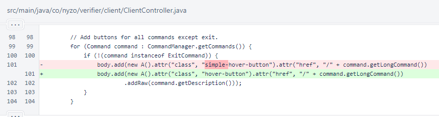In CommandEndpointWeb, the same changes from simple-hover-button to hover-button were made.
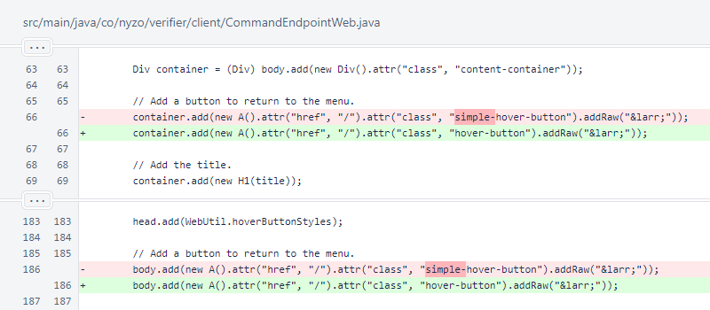Later in CommandEndpointWeb, the old rendering of the progress page only applies now to long-running commands. For commands that complete immediately, the HTML result is rendered and returned in the page. This eliminates the need for asynchronous updates for these commands. It also improves the appearance of the page.
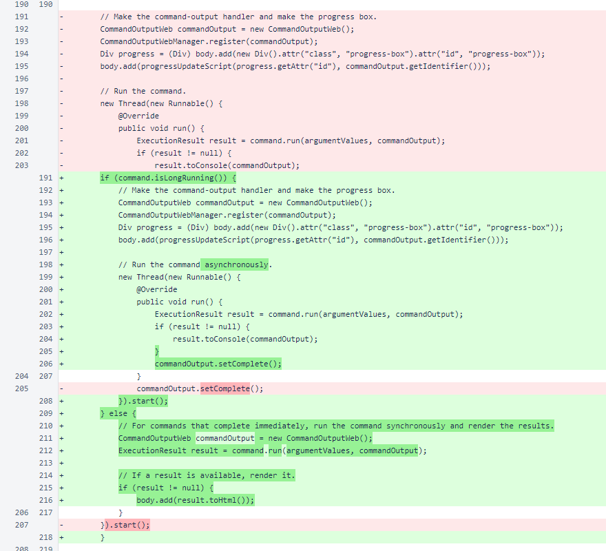In CommandTableHeader, a new field was added to mark columns that do not display well with wrapping only on typical word breaks. Long hexadecimal values and Nyzo identifier strings are examples of columns that benefit from use of this flag.
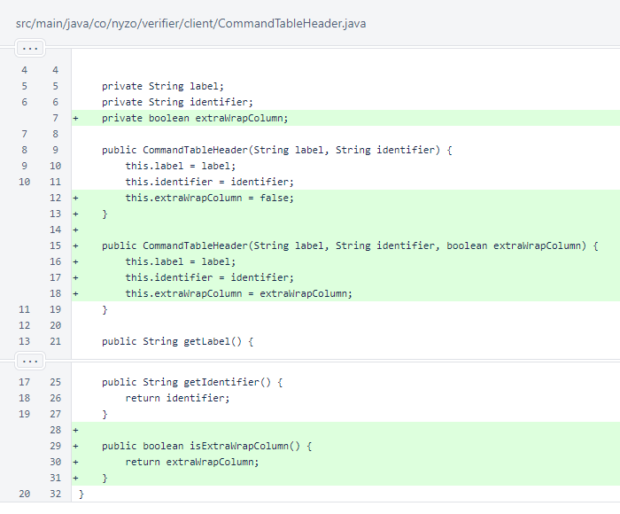The SimpleExecutionResult.toHtml() method is now implemented. The styles define rounded boxes with color-coded backgrounds for displaying errors and notices. They also define a table with visible cell borders, rounded edges, and contrasting header.
The errors are added to the top of the page, followed by the notices.
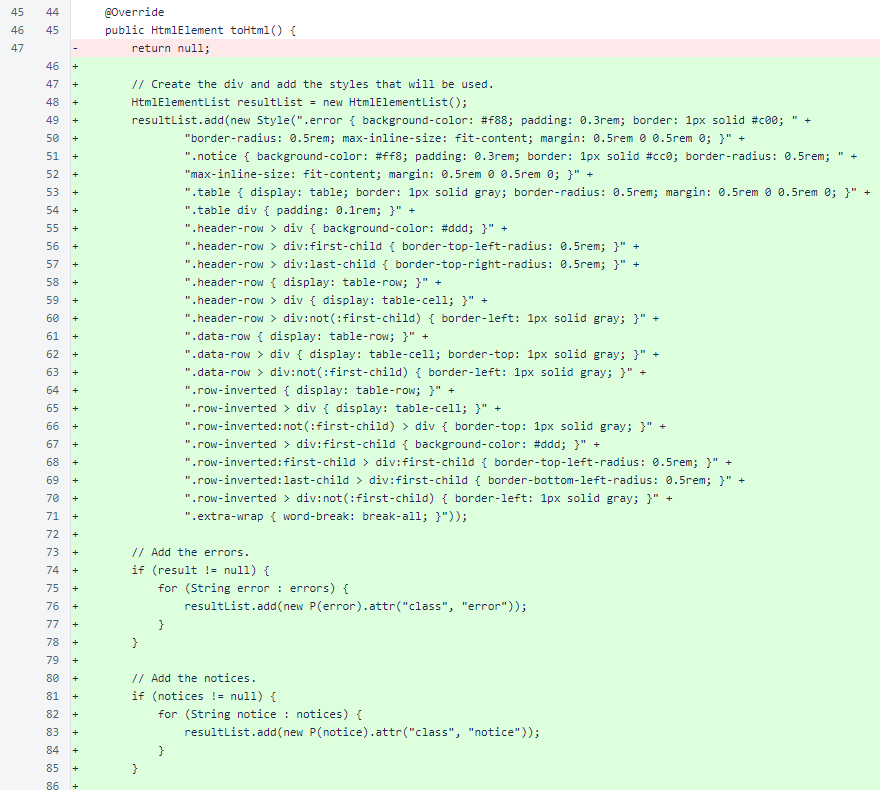The result table is added below the notices. Rendering respects row/column inversion and the preference for applying extra wrapping for a column.
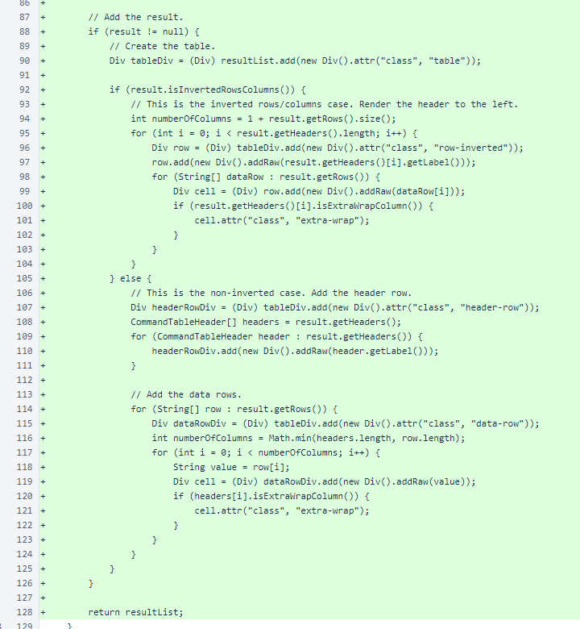In version 562, the display wallet balances command displayed console-like output.
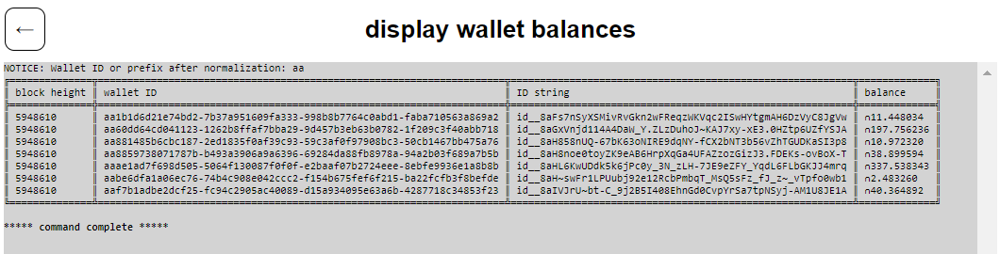In version 563, the same command displays an HTML table with a separate notice.
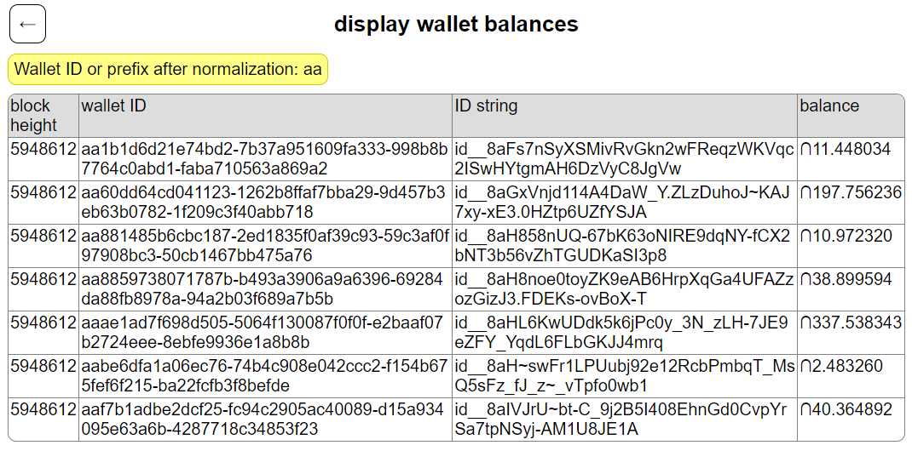In BalanceDisplayCommand, the walletId and walletIdNyzoString columns were marked for extra line wrapping.
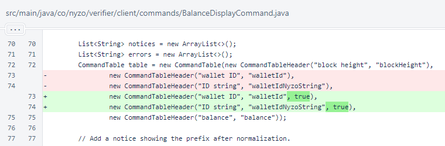In NttpDataGenerateCommand, the gitHash and senderData columns were marked for extra line wrapping. Also, the table was inverted for improved display of the multiple columns and single data row.
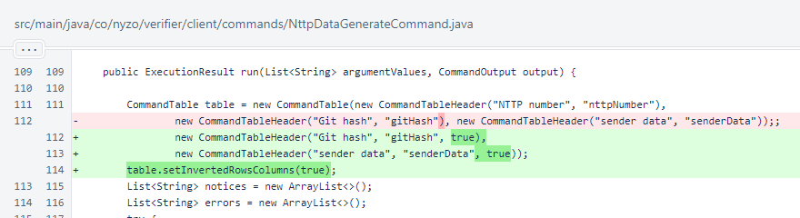All PrefilledDataCreateCommand columns were marked for extra line wrapping.
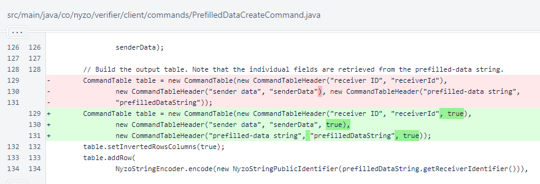All PrivateNyzoStringCommand columns were marked for extra wrapping.
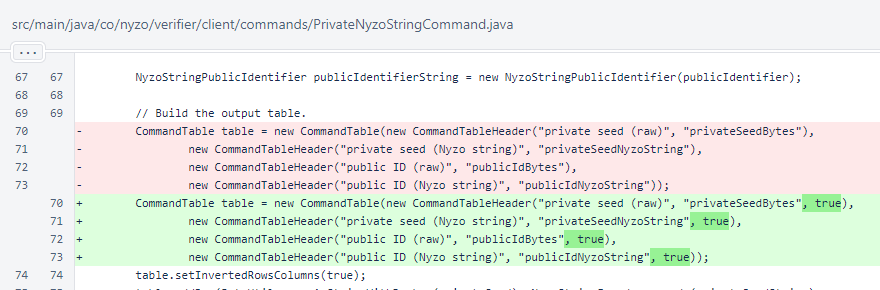Both PublicNyzoStringCommand columns were marked for extra wrapping.
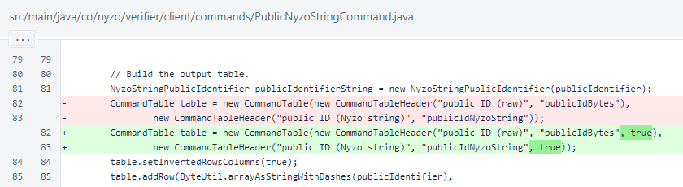In DocumentationEndpoint, both uses of simple-hover-button were changed to hover-button.
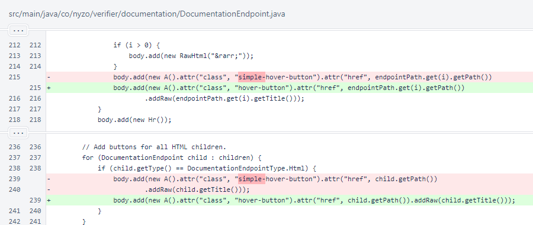In WebUtil.hoverButtonStyles, the simple-hover-button CSS classes were changed to hover-button.
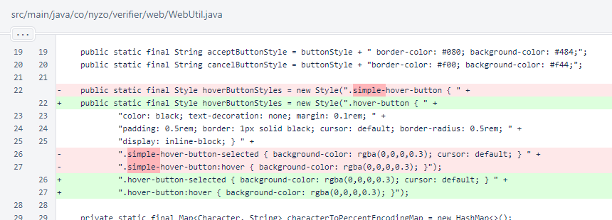